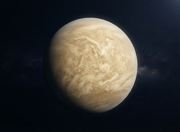

Cuatro mundos de roca.
Son los más pequeños y densos. Tienen superficies sólidas, pero sus atmósferas, temperaturas e historias no podrían ser más diferentes.

Mercurio
Pequeño, veloz y lleno de cráteres
El más cercano al Sol. Casi sin atmósfera, pasa de días abrasadores a noches muy frías.
4.879 km
DIÁMETRO
88 días
UN AÑO

Venus
El planeta más caliente
Su densa atmósfera de CO₂ atrapa el calor. Bajo sus nubes, la superficie alcanza unos 465 °C.
12.104 km
DIÁMETRO
225 días
UN AÑO

Tierra
Nuestro punto azul
Océanos, una atmósfera protectora y vida. Es el único mundo donde sabemos que existe.
12.742 km
DIÁMETRO
365 días
UN AÑO

Marte
Huellas de un pasado con agua
Un desierto rojizo con volcanes gigantes y casquetes polares. Los robots buscan pistas de su pasado.
6.779 km
DIÁMETRO
687 días
UN AÑO
Los planetas son inmensos, ¿Seremos los únicos seres vivos en el universo?